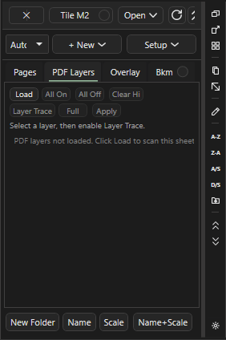

Snap и трассировка¶
Здесь: переключатели на нижней полосе (Snap, PDF, Ortho, Box), вкладка PDF Layers и Layer Trace, трасса стен внутри площади и запросы трассы через AI Inbox. В повседневном замере контур обводится кликами с Ortho и Snap; трассировка нужна редко, когда чертёж векторный и стен много. Как эти приёмы сочетаются с правкой: Правка замеров и привязки.
Привязки на полосе инструментов¶

Snap, PDF, Ortho, Box. Включённый подсвечен и действует для всех инструментов рисования и для перетаскивания вершин.| Кнопка | Клавиша | Что делает | Когда включать |
|---|---|---|---|
Snap |
F3 | курсор цепляется к точкам своих замеров и разметки на листе: концам и углам (end), серединам сегментов (mid), пересечениям (intersection), меткам Count, точкам текущего рисования; радиус 14 px экрана |
продолжить стену точно от конца соседней, замкнуть контур в ту же вершину, свести угол двух линий |
PDF |
Ctrl+F3 | привязка к углам и линиям векторного PDF; см. предупреждение | почти никогда |
Ortho |
F8 | следующая точка только по горизонтали или вертикали от предыдущей; Shift во время рисования или перетаскивания включает временно | прямоугольные планы, чтобы линия не уезжала на долю градуса |
Box |
F9 | Line и Area двумя противоположными углами вместо обвода по точкам; работает для Cut, аннотации Area и маски Hide |
прямоугольная комната, вырез шахты, бокс маски |
Привязки не меняют готовые замеры и не влияют на количество: стена, обведённая кликами по оси без Snap, даёт ту же длину. Включайте их ради аккуратной геометрии и чистого PDF, выключайте, когда курсор начинает прилипать не туда.
Как обвести контур с Snap и Ortho¶
Зачем: ломаная с ровными углами, замкнутая точно в начальную точку. Нужно: лист с масштабом.
- Включите
Ortho(F8) иSnap(F3). - Нажмите
Line(L) илиArea(A), задайте имя, OK. - Приблизьте зум к первому углу и кликните.
- Ведите к следующему углу:
Orthoдержит ось. На косом участке отпуститеOrthoодним F8 и верните после. - Для продолжения от чужого конца наведите курсор на конец другой линии: подсветка
Snapпоказываетend, кликните. - Замкните: подведите курсор к первой точке (подсветка
end) и кликните; у Area клик рядом с первой точкой замыкает сам. Закончите C или двойным кликом.
Результат: контур без щелей в углах; Total показывает длину или площадь.
Snap) и F8 (Ortho) ведут линию от концов соседней; F9 (Box) рисует прямоугольную площадь двумя щелчками.Советы
- Shift держит ось и при перетаскивании ручки или всего замера (
Shift = orthoв статусе). Snapработает и при перетаскивании вершины: угол одной стены прилипает к концу другой.- Лишняя точка во время рисования снимается Backspace.
Как нарисовать прямоугольник двумя кликами¶
Зачем: прямоугольная комната, шахта или бокс маски без четырёх кликов. Нужно: лист с масштабом.
- Включите
Box(F9). - Выберите
Area,LineилиCut. - Кликните один угол, затем противоположный.
Результат: готовый прямоугольник; для Line замкнутый контур из четырёх сторон. Статус Cut: box is too small или cancelled: the box has no size означает, что углы слишком близко.
Почему PDF Snap почти не используют¶
Работает ненадёжно
Слова владельца: "привязка к PDF очень плохо работает, я её не использую почти". PDF (Ctrl+F3) цепляется к углам и линиям вектора PDF и к чёрным линиям растра; на реальных планах она так же охотно прилипает к рамкам, выноскам и размерным линиям, как к стенам, и требует индекс чёрных линий для сканов. В рецептах этой базы она не используется: точность дают Ortho, Box, Snap к своим точкам, зум и правка вершин после.
Если всё же включить: статус PDF Snap on: current sheet and sheet overlay vector points/lines; Tab перебирает режимы продолжения по чертежу (vertices / edge / edges / contour / polyline), Viewport > PDF SNAP > Bridge задаёт радиус продолжения (ползунок PDF Snap Tab continuation radius, 4-96 px экрана, по умолчанию 36). Выключается тем же Ctrl+F3.
PDF Layers¶

Load, All On, All Off, Clear Hi, Layer Trace, Full, Apply.Под-вкладка PDF Layers в панели Pages (модуль PDF Layers, включён по умолчанию) работает с векторным PDF, в котором автор чертежа оставил слои: стены, размеры, мебель, текст. Скан слоёв не имеет.
Как скрыть лишние слои чертежа¶
Зачем: убрать размеры и мебель, чтобы видеть только стены при обводке.
Нужно: векторный PDF; на ленте Display включена галка PDF layers (по умолчанию лист показан одной картинкой Static image).
- Откройте вкладку
PDF Layersпод Pages и нажмитеLoad: слои читаются по запросу. - Снимите галки у ненужных слоёв: лист перерисовывается сразу, статус
Layer off: <слой>.All OffиAll Onпереключают все. - Чтобы найти слой на листе, поставьте галку
Hiу строки: слой подсвечивается;Clear Hiснимает подсветку.
Результат: лист показывает только включённые слои. Кнопка Apply в этой панели относится к Layer Trace, для видимости она не нужна. Скрытые слои не попадают и в кропы Crop to Sheet: кроп берёт видимость листа-источника (кропы).
Layer Trace¶
Трасса по слою: программа берёт геометрию одного слоя PDF (например слоя стен) и превращает её в замер без обвода кликами. Только векторные PDF.
Как снять позицию со слоя PDF¶
Зачем: контур или стены лежат отдельным слоем, и его можно взять целиком.
Нужно: слои загружены (Load), лист с масштабом, активная позиция того типа, который даёт режим (таблица ниже): Area для Full, Line для Edge и All Edges, Count для Point.
- Сделайте нужную позицию активной: выделите её в Takeoffs и нажмите Space или создайте новую кнопкой инструмента.
- Нажмите
Layer Traceв панели PDF Layers. Над листом появляется полоса трассы; переключатель на ней показываетLayer TraceвместоManual. - Укажите слой: кликните его строку в списке или наведите курсор на геометрию чертежа (статус
Layer Trace hover: <слой>. Click/Enter locks layer; Tab cycles candidates) и кликните или нажмите Enter, чтобы зафиксировать слой. - Выберите режим: Tab или кнопка с названием режима (на полосе над листом и в панели) перебирают
Full,Edge,Point,All Edges; статус показывает текущий. - Наведите курсор на нужную линию слоя и кликните или нажмите Enter (то же делает кнопка
Applyв панели): статусLayer Trace added <тип> from '<слой>'. - Проверьте результат в дереве и на листе: лишние сегменты (размерные линии, рамки) удалите инструментом
Select; Ctrl+Z откатывает создание.
| Режим | Что создаёт |
|---|---|
Full |
одну Area: прямоугольник по габариту всей геометрии слоя, а не по его контуру |
Edge |
одну Line: отрезок слоя, ближайший к курсору |
Point |
одну метку Count в точке курсора |
All Edges |
до 48 самых длинных отрезков слоя, каждый отдельной Line |
Результат: замер ложится в активную позицию. Если активной позиции нужного типа нет, программа убирает созданное со статусом No Line takeoff item is active... (или Area, Count). Если под курсором ничего нет: Layer Trace: no PDF layer found under this point.
Меню слоя в списке PDF Layers¶
ПКМ по строке слоя открывает меню с именем слоя в заголовке. Пункты Trace ... to Takeoff сразу включают Layer Trace, ставят режим и создают замер в активной позиции; точку они берут там, где курсор был на листе последний раз. Поэтому сначала наведите курсор на нужную линию, потом уведите его в список и откройте меню.
| Пункт | Что делает |
|---|---|
Use for Layer Trace |
делает слой слоем трассы без наведения на чертёж; при включённом Layer Trace он сразу готов к созданию замера |
Trace Full Layer to Takeoff |
режим Full: Area по габариту слоя |
Trace Nearest Edge to Takeoff |
режим Edge: отрезок у последней точки курсора |
Trace Point to Takeoff |
режим Point: метка Count в последней точке курсора |
Trace All Edges to Takeoff |
режим All Edges: до 48 самых длинных отрезков |
Show Layer / Hide Layer |
включить или выключить слой, как галка в строке |
Highlight Layer / Clear Highlight |
подсветить слой на листе или снять подсветку, как галка Hi |
При включённом модуле AI сверху ещё два пункта, Save Layer Info for AI и Queue AI Request for This Layer: они пишут сведения о слое в AI Inbox (ИИ в программе).
Trace Walls Inside Area¶
Детерминированная трасса стен внутри уже нарисованной площади: из векторных линий PDF программа строит центрлинии стен и складывает их в новую позицию Line. Нужен модуль Advanced Takeoff Tools (включён).
Как снять стены внутри площади¶
Зачем: десятки перегородок юнита или этажа одним действием, потом только проверка.
Нужно: векторный PDF, лист с масштабом, Area по контуру зоны (годится готовая 1st).
- ПКМ по площади на листе или по её строке в Takeoffs: Trace Walls Inside Area....
- В диалоге
Trace Walls Inside AreaзадайтеNew Line takeoff(имя по канону, напримерint 2x4 9.09). - Проверьте
Wall thickness (distance between the two face lines): по умолчанию 3 и 13 дюймов;Ignore walls shorter than1 ft. - На листах с тёмной заливкой несущих и rated-стен поставьте
Only solid (dark) filled walls - demising / corridor / rated: светло-серые перегородки юнитов отбрасываются.Dark cutoffоставьтеauto. - Галка
Include perimeter walls on the area edgeдобавляет линии вдоль границы площади (по умолчанию выключена: наружные стены меряют отдельно);Edge offset1 ft задаёт ширину этой зоны. - Нажмите Trace. Статус
Tracing walls: reading sheet vector/raster lines.... - Проверьте длину против ручного обвода хотя бы одного участка, лишние линии удалите, недостающие дорисуйте через
Record.
Результат: позиция Line с центрлиниями. Короткие обрывки, текст и выноски отфильтрованы, коллинеарные куски склеены. Если вектор не подошёл, статус PDF lines did not match; trying raster image; галка Allow rough image-only trace (may catch text) разрешает грубую трассу по картинке.
Советы
- Без масштаба листа трасса не стартует:
Set the sheet scale first: wall thickness is measured in real inches. - Трасса не отличает ext от int и не знает высоту: раскладка по позициям остаётся на эстиматоре.
- Там, где стены нарисованы одной линией без заливки, фильтр заливки отключается сам; результат проверяйте внимательнее.
Запросы трассы через AI Inbox¶
При включённом модуле AI в контекстном меню листа есть пункты Trace wall from this point, Trace closed area и Check missed takeoffs on this page. Они не рисуют сразу: создаётся запись в AI Inbox с текстом Pending SmartTrace request или Pending SmartCheck request, которую потом выполняют и проверяют через AI Manager или терминал ИИ (консоль ИИ, AI Manager). В дерево результат попадает только после подтверждения.
Ловушки¶
Snapна плотном чертеже цепляется к соседнему замеру или разметке: выключите F3 или приблизьте зум.Orthoмешает на планах с диагональными стенами: держите Shift только на нужном отрезке.Boxостаётся включённым для всех инструментов: после прямоугольника выключите F9, иначе следующая ломаная замкнётся после второго клика.PDFна скане без индекса чёрных линий молчит; на векторе цепляется к рамкам так же охотно, как к стенам.- Layer Trace и Trace Walls дают кандидатов, не готовый замер: сумма длин проверяется против ручного обвода.
См. также¶
- Правка замеров и привязки: выделение, вершины, рецепты
- Merge, Split, Break, Ends, Combine, Similar
- Инструменты замера, Листы (Pages)
- Дополнительные возможности, Идеи и планы: AI Auto Trace